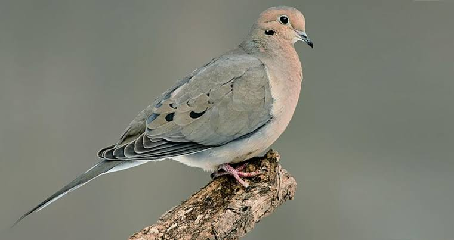

Dove
Birds
Columbidae is a bird family containing the pigeons and doves. It is the only family in the order Columbiformes. These are stout-bodied birds with short necks, and short slender bills that in some species feature fleshy ceres. They primarily feed on seeds, fruits, and plants.
Scientific name: Columbidae
Clutch size: Marquesan imperial pigeon: 1
Class: Aves
Family: Columbidae; Leach, 1820
Mass: Marquesan imperial pigeon: 900 g, Western crowned pigeon: 2.1 kg
Length: Marquesan imperial pigeon: 55 cm, Western crowned pigeon: 70 cm, Dwarf fruit dove: 13 – 15 cm
The common tailorbird (Orthotomus sutorius) is a songbird found across tropical Asia. Popular for its nest made of leaves "sewn" together and immortalized by Rudyard Kipling as Darzee in his Jungle Book, it is a common resident in urban gardens.
Dove, any of certain birds of the pigeon family, Columbidae (order Columbiformes). The names pigeon and dove are often used interchangeably.
Although “dove” usually refers to the smaller, long-tailed members of the pigeon family, there are exceptions: the domestic pigeon, a rather typical pigeon, is frequently called the rock dove and is the bird portrayed and called the “dove of peace.”
The common names of these birds do not necessarily provide any information about their biological relationships. See domestic pigeon; pigeon.
Biology of Dove
Distribution and habitat
The mourning dove has a large range of nearly 11,000,000 km2 (4,200,000 sq mi).[30] The species is resident throughout the Greater Antilles, most of Mexico, the Continental United States, southern Canada, and the Atlantic archipelago of Bermuda.
Much of the Canadian prairie sees these birds in summer only, and southern Central America sees them in winter only. The species is a vagrant in northern Canada, Alaska, and South America.
It has been spotted as an accidental at least seven times in the Western Palearctic with records from the British Isles (5), the Azores (1) and Iceland (1). In 1963, the mourning dove was introduced to Hawaii, and in 1998 there was still a small population in North Kona.
The mourning dove also appeared on Socorro Island, off the western coast of Mexico, in 1988, sixteen years after the Socorro dove was extirpated from that island.
Breeding
Courtship begins with a noisy flight by the male, followed by a graceful, circular glide with outstretched wings and head down. After landing, the male will approach the female with a puffed-out breast, bobbing head, and loud calls. Mated pairs will often preen each other's feathers.
The male then leads the female to potential nest sites, and the female will choose one. The female dove builds the nest. The male will fly about, gather material, and bring it to her.
The male will stand on the female's back and give the material to the female, who then builds it into the nest. The nest is constructed of twigs, conifer needles, or grass blades, and is of flimsy construction.
Mourning doves will sometimes requisition the unused nests of other mourning doves, other birds, or arboreal mammals such as squirrels.
Most nests are in trees, both deciduous and coniferous. Sometimes, they can be found in shrubs, vines, or on artificial constructs like buildings, or hanging flower pots. When there is no suitable elevated object, mourning doves will nest on the ground.
Feeding
Like other columbines, the mourning dove drinks by suction, without lifting or tilting its head. It often gathers at drinking spots around dawn and dusk.
Mourning doves eat almost exclusively seeds, which make up more than 99% of their diet. Rarely, they will eat snails or insects. Mourning doves generally eat enough to fill their crops and then fly away to digest while resting.
They often swallow grit such as fine gravel or sand to assist with digestion. The species usually forages on the ground, walking but not hopping.
At bird feeders, mourning doves are attracted to one of the largest ranges of seed types of any North American bird, with a preference for rapeseed, corn, millet, safflower, and sunflower seeds.
Mourning doves do not dig or scratch for seeds, though they will push aside ground litter; instead they eat what is readily visible. They will sometimes perch on plants and eat from there.
Predators and parasites
The primary predators of this species are diurnal birds of prey, such as falcons and hawks. During nesting, corvids, grackles, housecats, or rat snakes will prey on their eggs.
Cowbirds rarely parasitize mourning dove nests. Mourning doves reject slightly under a third of cowbird eggs in such nests, and the mourning dove's vegetarian diet is unsuitable for cowbirds.
Mourning doves can be afflicted with several different parasites and diseases, including tapeworms, nematodes, mites, and lice. The mouth-dwelling parasite Trichomonas gallinae is particularly severe.
While a mourning dove will sometimes host it without symptoms, it will often cause yellowish growth in the mouth and esophagus that will eventually starve the host to death. Avian pox is a common, insect-vectored disease.
Conservation status
The number of individual mourning doves is estimated to be approximately 475 million. The large population and its vast range explain why the mourning dove is considered to be of least concern, meaning that the species is not at immediate risk.
As a gamebird, the mourning dove is well-managed, with more than 20 million (and up to 40–70 million) shot by hunters each year.
However, more recent reporting cautions that mourning doves are in decline in the western United States, and susceptible everywhere in the country due to lead poisoning as they eat spent shot left over in hunting fields.
In some cases the fields are specifically planted with a favored seed plant to lure them to those sites.